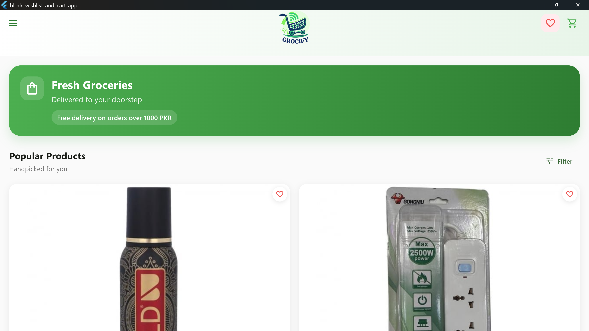

Overview
Grocify is a mobile-first grocery shopping app designed around reducing the cognitive load of weekly shopping. The core feature is an AI recommendation engine that learns your household's preferences over time and suggests a personalised weekly shop — including recipe-based suggestions that auto-populate the ingredient list.
The app integrates with local delivery partners for same-day fulfilment, with live order tracking from checkout to doorstep. A smart substitution system handles out-of-stock items by suggesting equivalent alternatives rather than silently removing them from your order.
Built with React Native for a consistent experience across iOS and Android, with Firebase handling real-time order state and TensorFlow Lite powering on-device recommendation inference for speed and privacy.